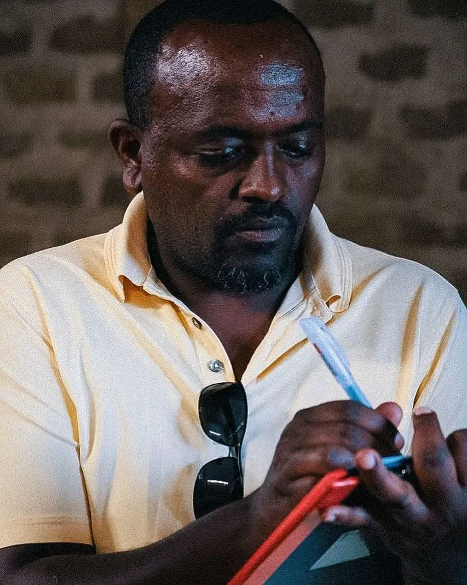
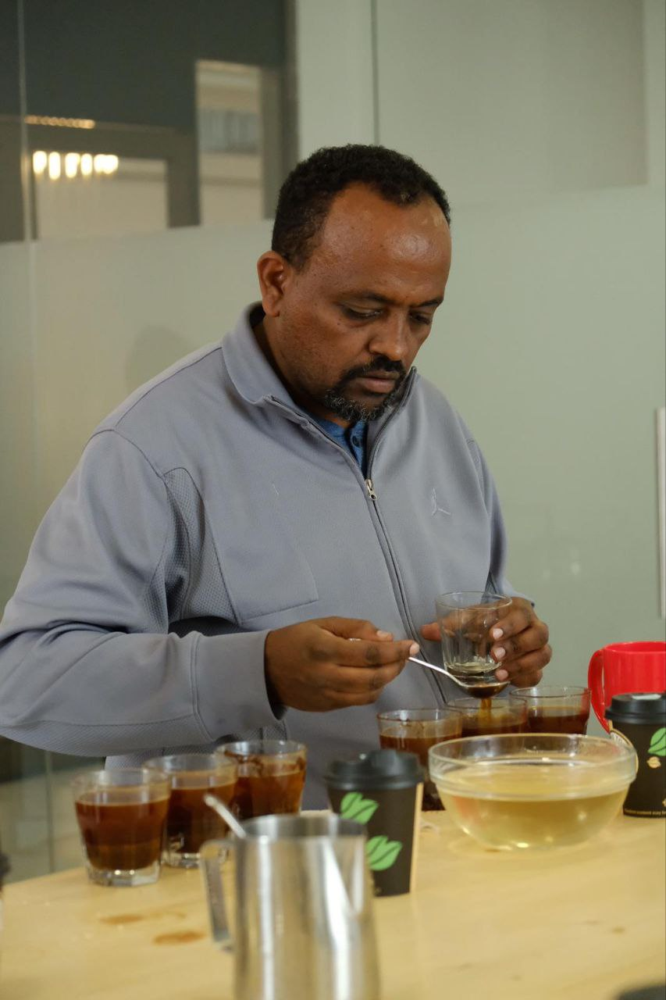

 Established in 2023, Ethio Catalyst is a dedicated Ethiopian coffee exporter connecting the birthplace of coffee to buyers across the globe. Built on a passion for quality and authenticity, the company serves as a bridge between local farmers and international markets, ensuring that the unique flavors of Ethiopian coffee are preserved and appreciated worldwide.
With a strong commitment to excellence, transparency, and long-term partnerships, Ethio Catalyst works hand in hand with producers, cooperatives, and buyers to deliver coffee that reflects Ethiopia’s rich heritage. The company’s mission goes beyond trade — it empowers communities, promotes sustainability, and showcases Ethiopia’s role as a global leader in specialty coffee.
 By blending tradition with modern practices, Ethio Catalyst inspires trust and confidence among partners worldwide. Our greatest strength lies in our ability to stay deeply connected — to our farmers, who supply with dedication, and to our buyers, who trust us to deliver consistently. We pride ourselves on offering not only quality but also quantity, ensuring reliability at every scale of trade. With strong relationships across the supply chain, we stand out as exporters who value integrity, efficiency, and long-term collaboration. Every cup tells a story of hard work, community, and Ethiopia’s unmatched role as the origin of coffee.